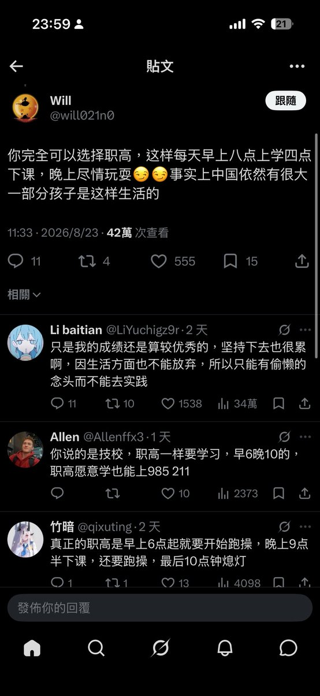

愿晚星照常升起🌈(keep4o)
@tadatsukiei
@Killer_Haruhi 我也这么认为，这套统一话术见太多了已经

はるひ
@Killer_Haruhi
支人的潜台词是：意思是想轻松有种你就去中专
既完成了对向往美好生活的人的威胁，又捏造了一个“滞纳也有日式教育”或者“日式教育不过相当于滞纳的中专”的谎言，应该都是经过统一培训的话术。 https://t.co/tqqSlm4gfL